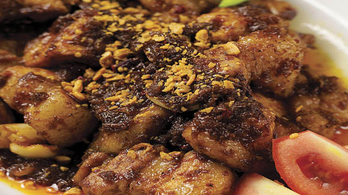
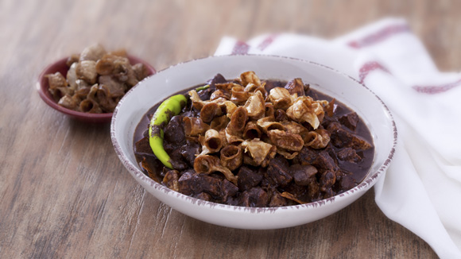
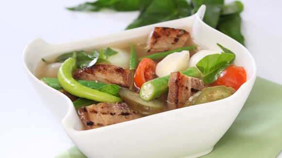

Spicy Braised Pork Nilaga
INGREDIENTS
1 pc large oinion, chopped
2 pc large tomatoes, chopped
1/2 kilo pork kasim, cut into large cubes
2 pcs. tanglad stem, pounded
1 can buttom mushrooms, drained and sliced in half
2 tbsp wansuy leaves, chopped
1/2 cup onion leeks, thinly sliced
INSTRUCTIONS
Begin by getting your pot nice and hot over medium heat. Pour some oil and saute onions, ginger, and tomatoes. Cook until tender.
In goes the pork, tanglad, and siling labuyo and continue to saute.
Pour in the water and Knorr Pork Cubes. Let this boil and cook until the meat is tender before adding the mushroom and coconut cream.
Reduce the heat to a simmer. Add wansuy and leeks and that's our dish. Everything you love is in this dish. Warm soup, spicy beef, and that refreshing flavour of tanglad and wansuy! It's time to indulge!
Pork Ramen
INGREDIENTS
1 whole head garlic, sliced into half then toasted
½ kg pork belly, sliced thinly
4 tsp. Kikkoman soy sauce
1 pack ramen noodles, cooked in boiling water until al dente
1 pc hard boiled egg, sliced into half
5 tbsp. spring onions, chopped, for garnish
woodear mushrooms, cooked, sliced
INSTRUCTIONS
Begin by cooking the pork and making a broth out of it. Then, get your pot nice and hot over medium high heat and place the garlic, pork belly, water and Knorr Pork Cubes in. Now, bring this to a simmer until the pork belly is tender.
The next step is to flavour the broth with soy sauce and chilli beans before adding the noodles in. Take note that you need to give this 3 minutes to simmer.
To serve the ramen, here’s what you’ve got to do: place a serving of the noodles in a bowl, pour the broth over it and top everything with some thinly sliced pork belly, eggs, mushrooms and spring onions.
No need to go to a resto to enjoy the comforting taste of Ramen. So instead of eating this all by yourself, try serving this up to family.
Begucan Babi

INGREDIENTS
1 tbsp annatto oil (annatto seeds infused in oil)
3 pcs tomatoes, deseeded, sliced
1 pc Knorr Pork Broth Cubes
1/2 kilo pork liempo, 1 1/2 inch cubes
1 tsp ground black pepper
INSTRUCTIONS
Let’s begin by making annatto oil. First, heat together 1 tbsp annatto seeds and 2 tbsp vegetable oil in medium heat. Allow this to sizzle and remove the seeds when it turns dark in color.
Now, let’s proceed in cooking our dish. Drop the garlic, onions, tomatoes and bagoong in the annatto oil.
The next step is to pour in the vinegar. Simmer for a minute to cook before adding Knorr Pork Broth Cube, pork liempo, pepper and green chilli. Bring this to a boil and then simmer until the meat is tender.
You will surely eat a lot when your mom serves you this kapampangan dish. Manyaman!
Crispy Dinuguan

INGREDIENTS
1/2 kilo pork belly (liempo) (ask your butcher to cut your pork belly to 1” strips)
1 whole white onion, peeled and minced
3 cups of pork blood (strained)
1/2 cup sukang Iloco (you can use cane vinegar)
2 cups Knorr Pork broth (dilute 1 piece Knorr Pork Cube in 2 cups water)
INSTRUCTIONS
Let’s begin by boiling the pork heart, pork liver and pork intestine in a stockpot or deep pan filled with water. You then have to cook the meat until they are tender. Remove the pork intestine and discard the stock used for boiling.
Now, slice the pork heart and pork liver into strips. Set this aside after.
Next, grab a pan and pour some oil. Make this nice and hot over medium high heat. Bring the garlic and onion into the pan and sauté. When the garlic turns slightly brown and the onions are translucent, throw in the pork belly followed by the pork heart and liver strips. Sauté briefly before adding the Knorr Pork broth, sukang iloco and bay leaves. Bring this to a simmer until the pork belly is tender.
Now when the liquid has reduced to ¾, gently add the pork blood in and continue simmering until it thickens (add more Knorr pork broth if sauce is too thick). Then, season with Knorr Liquid Seasoning, salt and pepper.
NWhen you deep fry the pork intestine to a crisp, golden brown color, this dish is done! Be careful, though, because the crispy pork intestine topped on your dinuguan will cause you to eat more!
Sinigang na Grilled Liempo

INGREDIENTS
4 pcs tomatoes, quartered
1 kg grilled liempo, cut into serving pieces
1 (40g) packs Knorr Sinigang sa Sampalok Mix
1/2 bundle kangkong, sliced
INSTRUCTIONS
Let’s begin by boiling the “hugas bigas” and then throw in the onions, tomatoes, gabi and grilled liempo. You may then bring this to a simmer over low heat until pork is tender.
When the gabi is tender, mash half of it to thicken the soup. Now, throw in the sili, radish and okra and let this simmer.
The next step is to pour the Knorr Sinigang Mix. After pouring, you can now add the sitaw and kangkong last. Stir these well and cook for another minute and this dish is done!
Make sure you have enough space in your stomach because this Sinigang na Grilled Liempo Recipe will make you want to eat more. Enjoy it best with family and good conversations at the table.